Candidate List 20260903Last night — ZTF: 2,512 passed basic cuts (71 young) · LSST: 0 passed basic cuts (0 young)Previous Day Next Day
Section 1: New Sources (age<1d) Section 2: Old (1-5d) sources observed last nightplaceholder
Section 1: New Afterglow/FBOT Cands Last Night (0)
Section 2: Older Sources Observed Last Night (9)
0. [ZTF] ZTF26abrbsty (Afterglow?) (TNS: AT 2025omw) [Back to Top] [Share] [Trigger Swift] [Fritz Alert] [Fritz Source] [Lasair]RA, Dec: 302.21989, 2.95975 20h 8m52.77s, 2d57m35.11sGalactic (l, b): 44.73664, -15.72982 ext(g-r) = 0.089


TESS: Sectors [54 81]
PS1: 0 sources in 3 arcsec
LegacySurvey: 0 sources in 3 arcsec

Extinction-corrected gr color:
From alerts: -1.59 +/- 99 mag
Extinction-corrected gi color:
From alerts: -1.5 +/- 99 mag
Rise Rate:
g: 0.55 mag/day
Fade Rate:
g: 0.66 mag/day
1. [ZTF] ZTF26abrdihi (Afterglow?) [Back to Top] [Share] [Trigger Swift] [Fritz Alert] [Fritz Source] [Lasair]RA, Dec: 359.50567, 43.98108 23h58m1.36s, 43d58m51.89sGalactic (l, b): 112.87687, -17.84531 ext(g-r) = 0.114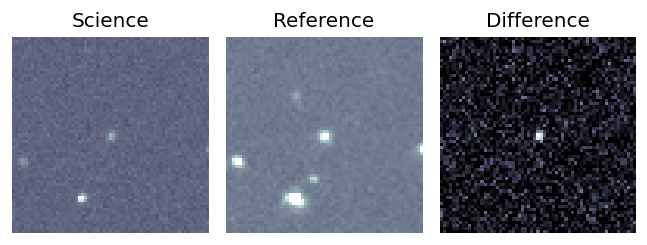
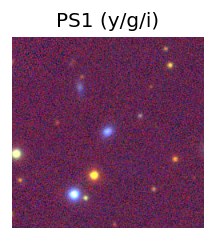

TESS: Sectors [17 84]
PS1: 0 sources in 3 arcsec
LegacySurvey: 0 sources in 3 arcsec
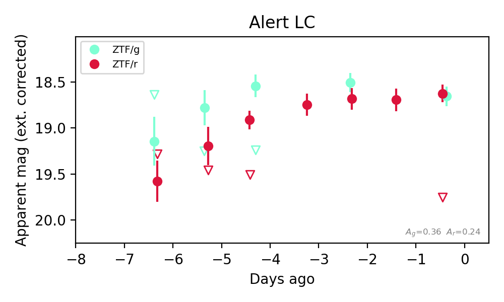
Extinction-corrected gr color:
From alerts: 0.03 +/- 0.15 mag
Consistent with synchrotron, g-r>0!
Rise Rate:
g: 0.67 mag/day
r: 0.11 mag/day
Fade Rate:
g: 0.44 mag/day
2. [ZTF] ZTF26abrmguw (Afterglow?) [Back to Top] [Share] [Trigger Swift] [Fritz Alert] [Fritz Source] [Lasair]RA, Dec: 26.19491, 55.36167 1h44m46.78s, 55d21m42.00sGalactic (l, b): 130.5176, -6.7225 ext(g-r) = 0.288


TESS: Sectors [18 58 85]
PS1: 0 sources in 3 arcsec
LegacySurvey: 0 sources in 3 arcsec

Extinction-corrected gr color:
From alerts: -0.14 +/- 0.14 mag
Consistent with synchrotron, g-r>0!
Rise Rate:
g: 0.4 mag/day
r: 1.02 mag/day
Fade Rate:
3. [ZTF] ZTF26abrpjdl (Afterglow?FBOT?) [Back to Top] [Share] [Trigger Swift] [Fritz Alert] [Fritz Source] [Lasair]RA, Dec: 320.11244, 2.17822 21h20m26.99s, 2d10m41.58sGalactic (l, b): 54.20305, -31.40075 ext(g-r) = 0.064


TESS: Sectors [55 82]
SDSS (<15 kpc):Found SDSS phot-z: z=0.10; peak abs mag = -19.69
PS1: 0 sources in 3 arcsec
LegacySurvey: 1 sources in 3 arcsec Closest: d = 2.83 arcsec, 322.0 deg (east of north) photoz=0.07 (68% bounds 0.05, 0.11), type=REX peak abs mag (ext. corrected) = -19.03 (68% bounds -18.0, -19.88)

Extinction-corrected gr color:
From alerts: -0.3 +/- 0.17 mag
Extinction-corrected gi color:
From alerts: -0.44 +/- 0.13 mag
Extinction-corrected ri color:
From alerts: -0.14 +/- 0.17 mag
Consistent with synchrotron, g-r>0!
Rise Rate:
g: 0.4 mag/day
r: 0.43 mag/day
i: 0.63 mag/day
Fade Rate:
4. [ZTF] ZTF26abrshyo (Afterglow?) [Back to Top] [Share] [Trigger Swift] [Fritz Alert] [Fritz Source] [Lasair]RA, Dec: 284.64822, -9.46929 18h58m35.57s, -9d-28m-9.45sGalactic (l, b): 25.28429, -5.87853 ext(g-r) = 0.357


TESS: Sectors 80
PS1: 0 sources in 3 arcsec
LegacySurvey: 0 sources in 3 arcsec

Extinction-corrected gr color:
From alerts: -0.02 +/- 0.18 mag
Consistent with synchrotron, g-r>0!
Rise Rate:
g: 0.69 mag/day
r: 1.31 mag/day
Fade Rate:
5. [ZTF] ZTF26abrvdps (Afterglow?FBOT?) [Back to Top] [Share] [Trigger Swift] [Fritz Alert] [Fritz Source] [Lasair]RA, Dec: 245.30086, 57.63088 16h21m12.21s, 57d37m51.18sGalactic (l, b): 87.78822, 42.499 ext(g-r) = 0.012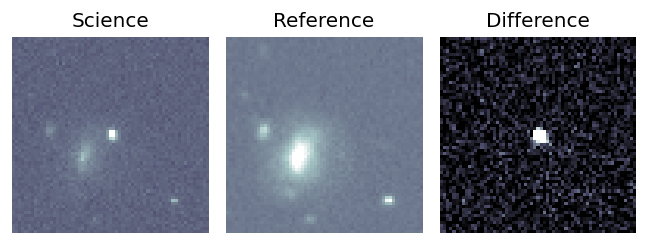
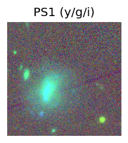
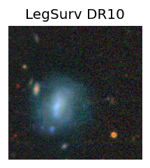
TESS: Sectors [ 15 16 19 22 23 24 25 50 51 52 56 58 76 77 78 79 82 83
86 117 121]
SDSS (<15 kpc):Found SDSS phot-z: z=0.45; peak abs mag = -24.60
PS1: 0 sources in 3 arcsec
LegacySurvey: 1 sources in 3 arcsec Closest: d = 1.38 arcsec, 97.2 deg (east of north) photoz=0.9 (68% bounds 0.55, 1.21), type=REX peak abs mag (ext. corrected) = -26.39 (68% bounds -25.09, -27.19)
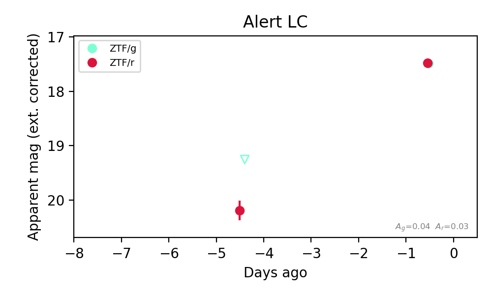
Extinction-corrected gr color:
From alerts: 0.01 +/- 0.06 mag
Consistent with synchrotron, g-r>0!
Rise Rate:
g: 0.46 mag/day
r: 0.69 mag/day
Fade Rate:
6. [ZTF] ZTF26abrvicp (Afterglow?) [Back to Top] [Share] [Trigger Swift] [Fritz Alert] [Fritz Source] [Lasair]RA, Dec: 250.95807, 3.6823 16h43m49.94s, 3d40m56.28sGalactic (l, b): 20.72286, 29.90984 ext(g-r) = 0.08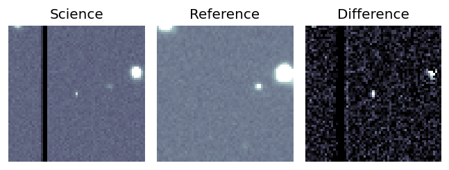
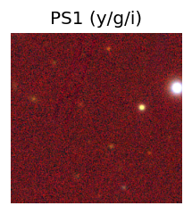
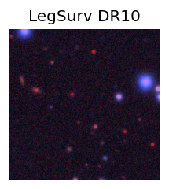
TESS: Sectors 117
PS1: 0 sources in 3 arcsec
LegacySurvey: 1 sources in 3 arcsec Closest: d = 7.28 arcsec, 52.8 deg (east of north) photoz=0.95 (68% bounds 0.85, 1.06), type=REX peak abs mag (ext. corrected) = -26.73 (68% bounds -26.45, -27.02)
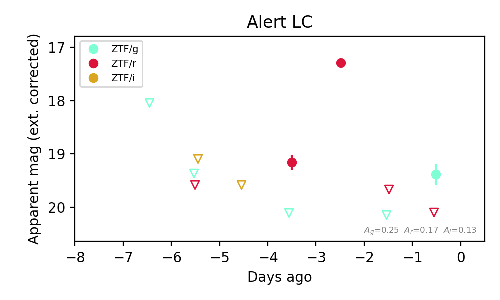
Extinction-corrected gr color:
From alerts: -0.71 +/- 99 mag
Rise Rate:
g: 0.74 mag/day
r: 1.85 mag/day
Fade Rate:
r: 2.37 mag/day
7. [ZTF] ZTF26abrvyxr (Afterglow?) [Back to Top] [Share] [Trigger Swift] [Fritz Alert] [Fritz Source] [Lasair]RA, Dec: 289.73561, -5.70376 19h18m56.55s, -5d-42m-13.52sGalactic (l, b): 30.95325, -8.70475 ext(g-r) = 0.538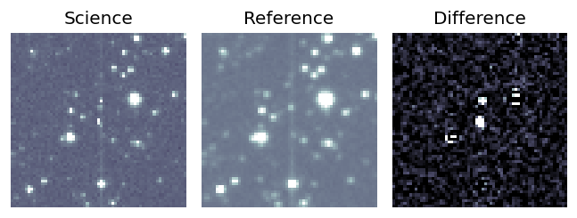
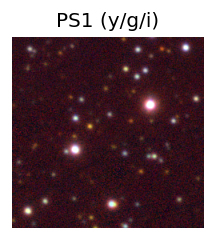

TESS: Sectors [54 80]
PS1: 0 sources in 3 arcsec
LegacySurvey: 0 sources in 3 arcsec
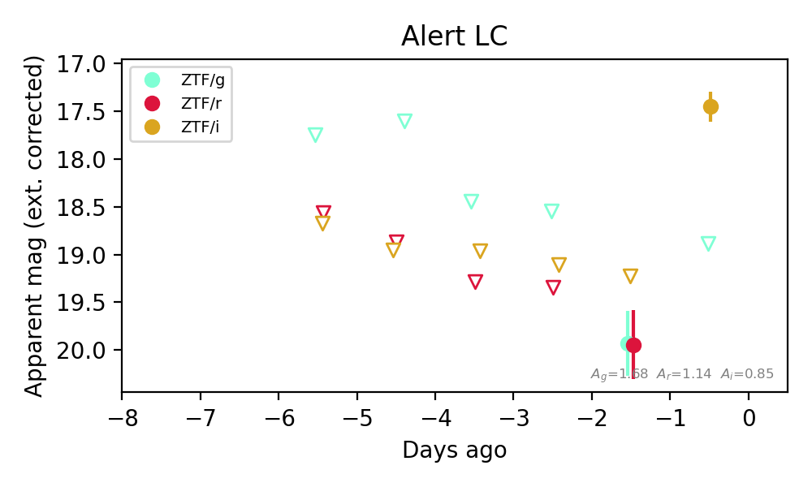
Extinction-corrected gr color:
From alerts: -0.01 +/- 0.5 mag
Extinction-corrected gi color:
From alerts: 1.43 +/- 99 mag
Extinction-corrected ri color:
From alerts: 0.72 +/- 99 mag
Consistent with synchrotron, g-r>0!
Rise Rate:
i: 1.73 mag/day
Fade Rate:
8. [ZTF] ZTF26abrxnoq (Afterglow?) [Back to Top] [Share] [Trigger Swift] [Fritz Alert] [Fritz Source] [Lasair]RA, Dec: 354.00085, -19.47127 23h36m0.20s, -19d-28m-16.58sGalactic (l, b): 52.80651, -71.09205 ext(g-r) = 0.037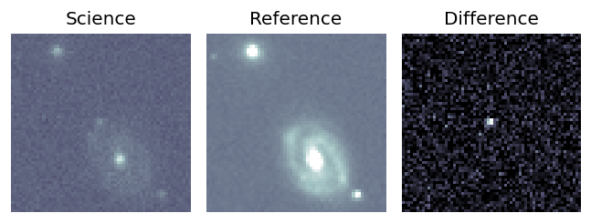
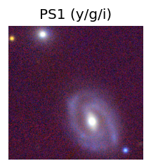
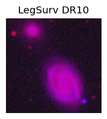
TESS: Sectors [ 2 69 96 107]
SDSS (<15 kpc):Found SDSS phot-z: z=0.36; peak abs mag = -22.06
PS1: 0 sources in 3 arcsec
LegacySurvey: 0 sources in 3 arcsec
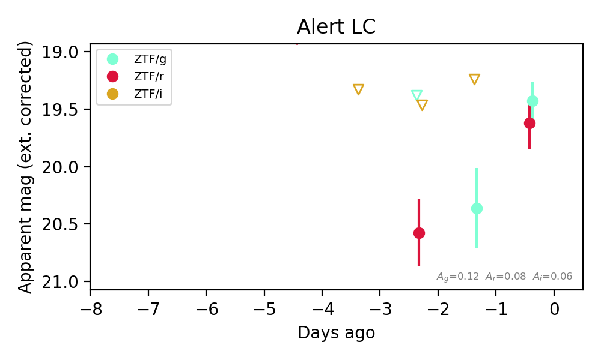
Extinction-corrected gr color:
From alerts: -0.19 +/- 0.28 mag
Extinction-corrected gi color:
From alerts: 1.12 +/- 99 mag
Extinction-corrected ri color:
From alerts: 1.11 +/- 99 mag
Consistent with synchrotron, g-r>0!
Rise Rate:
g: 0.97 mag/day
r: 0.5 mag/day
Fade Rate: